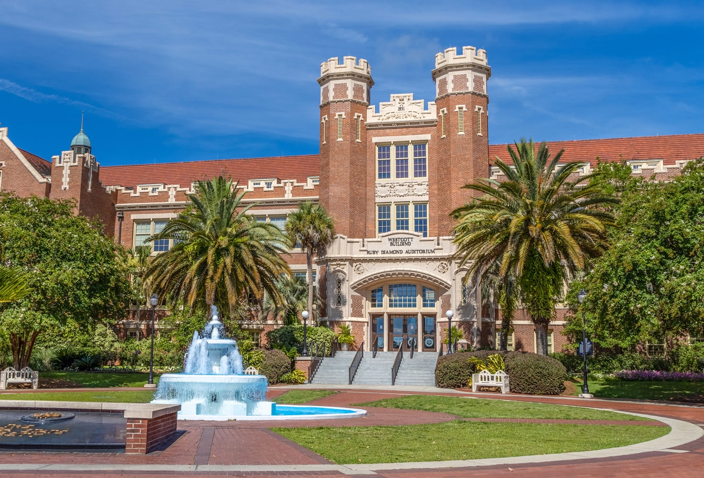

Hiring
I am hiring Ph.D. students for 2026. If interested, please send your CV, transcripts (both B.S. and M.S. if applicable), and English test scores (TOEFL/GRE if available) to kai.zhao@fsu.edu.
Students in my lab typically come from top programs such as Peking University, have strong competitive programming records (ICPC/CCPC), or bring years of industry experience.
Why HPC @ FSU?
FSU is a top-tier research university with a world-class academic reputation:
- Top 10 public university
FSU is ranked among the top 10 public universities by Niche. - Top 30 in the world for HPC
The Department of Computer Science at FSU is ranked among the top 30 in the world in high-performance computing. - 51st in the U.S. overall
FSU is ranked 51st nationally by U.S. News & World Report.

Student Requirements
Applicants should have a background in computer science, electronics, mathematics, statistics, physics, chemistry, or a related field. No prior research experience is required, but candidates must be proficient in at least one programming language, have strong self-learning ability, rigorous logical thinking, perseverance, and a strong interest in pursuing a Ph.D. The TOEFL is required for international applicants; the GRE is optional.